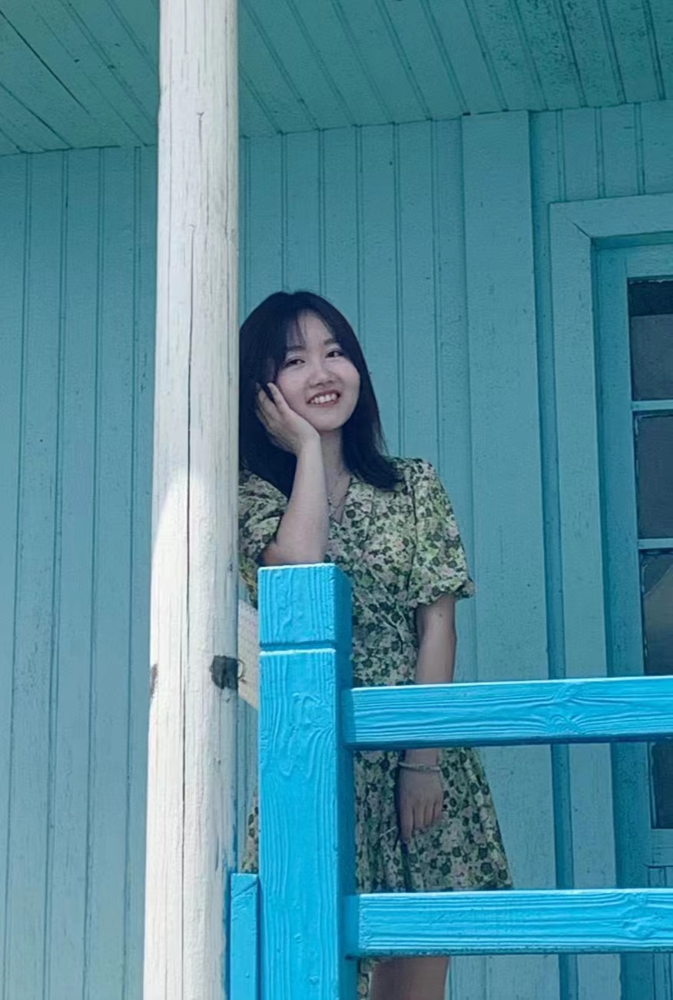
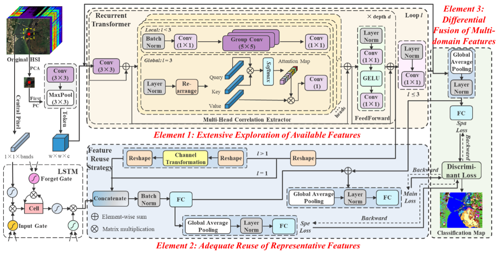
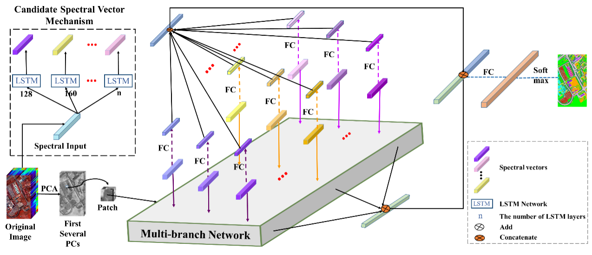
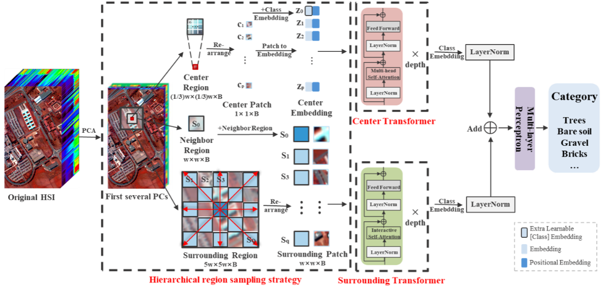
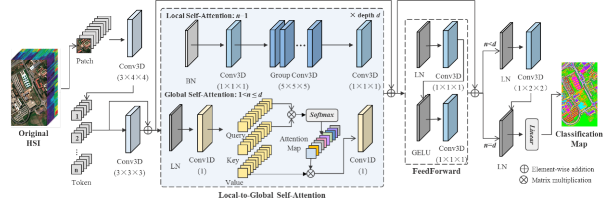
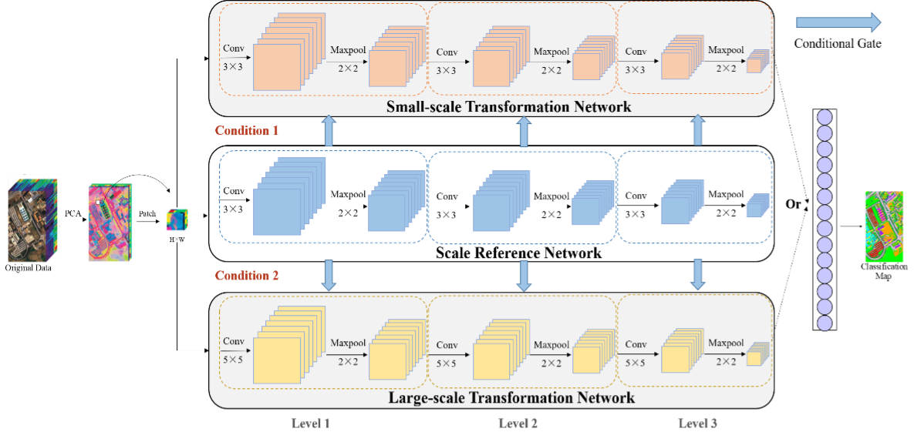

|  | Jiaqi Yang (杨佳琪-武汉大学) |
News
- [2023.04] One paper is acceptted as a Oral presentation by IGARSS 2023 (link)!
Research Interest
I am working in remote sensing image processing and deep learning. Currently, I focus on the following research topics:- hyperspectral image classification
- multi-modal image classification
- weakly-supervised learning
Education
- 2021.09-now Pursuing Ph.D of Photogrammetry and Remote Sensingin LIESMARS, Wuhan University.
Supervisor: Prof. Liangpei Zhang & Bo Du - 2019.09-2021.06 M.E.Candidate of Photogrammetry and Remote Sensing in LIESMARS, Wuhan University.
Supervisor: Prof. Liangpei Zhang & Bo Du - 2015.09-2019.06 B.E. of Geographic Information Science in Navigation college, Dalian Maritime University.
Publications
Journals:
|  |
[4] Overcoming the Barrier of Incompleteness: A Hyperspectral Image Classification Full Model Jiaqi Yang, Bo Du and Liangpei Zhang, IEEE Transactions on Neural Networks and Learning Systems (TNNLS), 2023. (SCI Q1 TOP, IF=14.255) [Paper][Code] |
|  |
[3] Can Spectral Information Work While Extracting Spatial Distribution?—An Online Spectral Information Compensation Network for HSI Classification Jiaqi Yang, Bo Du, Yonghao Xu and Liangpei Zhang, IEEE Transactions on Image Processing (TIP), 2023. (SCI Q1 TOP, IF=11.041 ) [Paper][Code] |
|  |
[2] From center to surrounding: An interactive learning framework for hyperspectral image classification Jiaqi Yang, Bo Du and Liangpei Zhang, ISPRS Journal of Photogrammetry and Remote Sensing (ISPRS JP&RS), 2023. (SCI Q1 TOP, IF=11.774) [Paper][Code] |
 |
[1] Enhanced Multi-scale Feature Fusion Network for HSI Classification Jiaqi Yang, Chen Wu, Bo Du and Liangpei Zhang, IEEE Transactions on Geoscience and Remote Sensing (TGRS), 2021. (SCI Q1 TOP, IF=8.125) [Paper] |
Conferences:
|  |
[3] LGFORMER: LOCAL-TO-GLOBAL TRANSFORMER FOR HYPERSPECTRAL IMAGE CLASSIFICATION Jiaqi Yang, Bo Du and Chen Wu, Proceeding of the IEEE International Geoscience and Remote Sensing Symposium (IGARSS 2023), 2023. (EI) [Paper] |
 |
[2] HYBRID VISION TRANSFORMER MODEL FOR HYPERSPECTRAL IMAGE CLASSIFICATION Jiaqi Yang, Bo Du and Chen Wu, Proceeding of the IEEE International Geoscience and Remote Sensing Symposium (IGARSS 2022), 2022. (EI) [Paper] |
|  |
[1] AUTOMATICALLY ADJUSTABLE MULTI-SCALE FEATURE EXTRACTION FRAMEWORK FOR HYPERSPECTRAL IMAGE CLASSIFICATION Jiaqi Yang, Bo Du, Chen Wu and Liangpei Zhang Proceeding of the IEEE International Geoscience and Remote Sensing Symposium (IGARSS 2021), 2021. (EI) [Paper] |
Membership:
- IEEE, Student Member
- IEEE Geoscience and Remote Sensing Society (GRSS), Student Member
Journal Reviewer:
- IEEE Transactions on Geoscience and Remote Sensing (TGRS)
- International Journal of Wavelets, Multiresolution and Information Processing (IJWMIP)
Awards
- 2023.05, Outstanding student leader, Wuhan University | 优秀学生干部
- 2023.04, Outstanding Oral Presentation in International Conference on Geology, Mapping and Remote Sensing | 优秀口头报告
- 2022.10, The First Prize of Excellent Academic Scholarship, Wuhan University | 优秀学业奖学金一等奖
- 2022.09, Outstanding Graduate Student, Wuhan University | 优秀研究生
- 2021.09, Outstanding Teaching Assistant, Wuhan University | 优秀助教
- 2021.05, Excellent Graduate, Wuhan University | 优秀毕业生
- 2020.12, Outstanding Graduate Student, Wuhan University | 优秀研究生
- 2020.12, The Second Prize of Excellent Academic Scholarship, Wuhan University | 优秀学业奖学金二等奖
- 2020.08, International Summer School Volunteer, Wuhan University | 国际暑期学校志愿者
- 2020.01, Excellent Individuals in Graduate Student Academic and Scientific Activities, Wuhan University | 学术科技活动先进个人
- 2019.06, Excellent Graduate of Liaoning Province | 辽宁省优秀毕业生
- 2018.09, The Bronze Prize, National Internet Innovation and Entrepreneurship Competition | 全国“互联网+”大学生创新创业大赛铜奖
- 2018.04, The First prize, "Challenge Cup" Entrepreneurship Plan Competition of Liaoning Province | “挑战杯”辽宁省大学生创业计划竞赛一等奖
- 2017.12, The Second Prize, Undergraduate Mathematical Contest of Liaoning Province | 辽宁省大学生数学竞赛二等奖
- 2017.05, The Third Prize, Undergraduate Physics Tournament of Liaoning Province | 辽宁省大学生物理学术竞赛三等奖
- 2016.12, The First Prize, Undergraduate Mathematical Contest of Liaoning Province | 辽宁省大学生数学竞赛一等奖
- ...